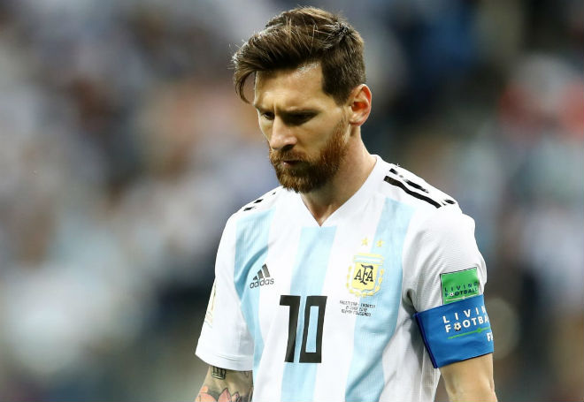

24h thể thao
Không những vậy, thủ môn Sergio Romero bất ngờ dính chấn thương rất khả nghi trong một buổi tập và rồi phải chính thức rút lui khỏi đội tuyển. Đây là sự kiện khiến người dân Argentina vô cùng tiếc nuối bởi thủ môn thuộc biên chế MU là nhân vật chính trong khung gỗ giúp Argentina vào chung kết World Cup 2014 và suốt hành trình vòng loại World Cup 2018.
Mọi chuyện trở nên căng thẳng khi truyền thông Argentina nghi ngờ rằng “chấn thương” của Romero không minh bạch. Thậm chí có cả một thuyết âm mưu rằng Messi ép Romero rời tuyển để nhường vị trí bắt chính cho Caballero, một người bạn của Leo ngoài đời thực.
xem thêm